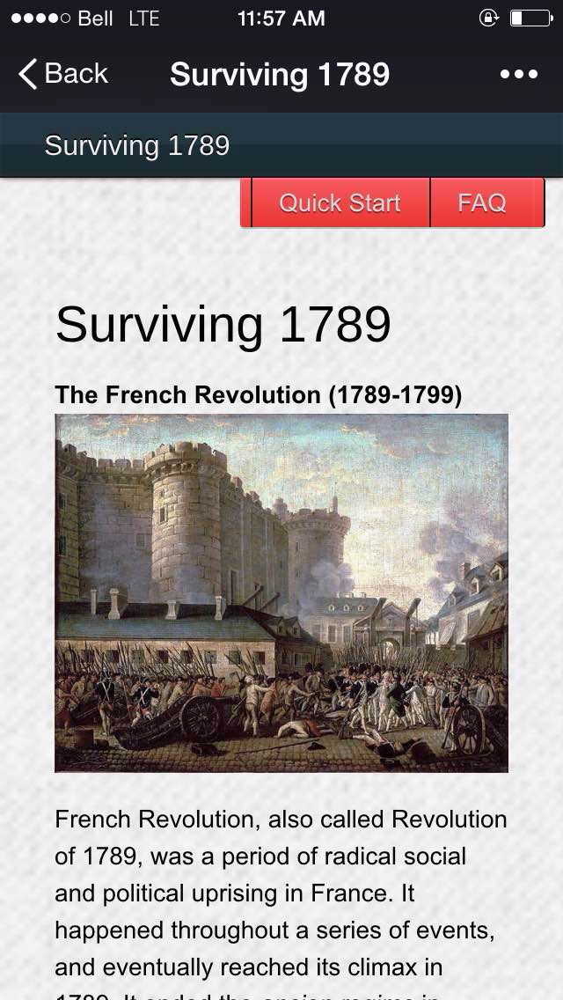
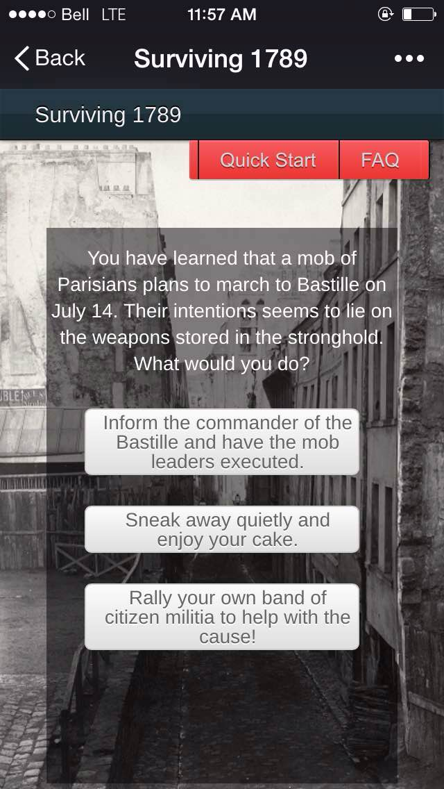
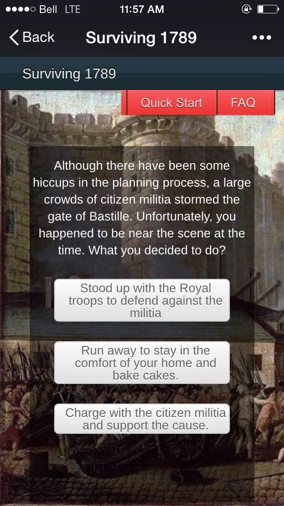
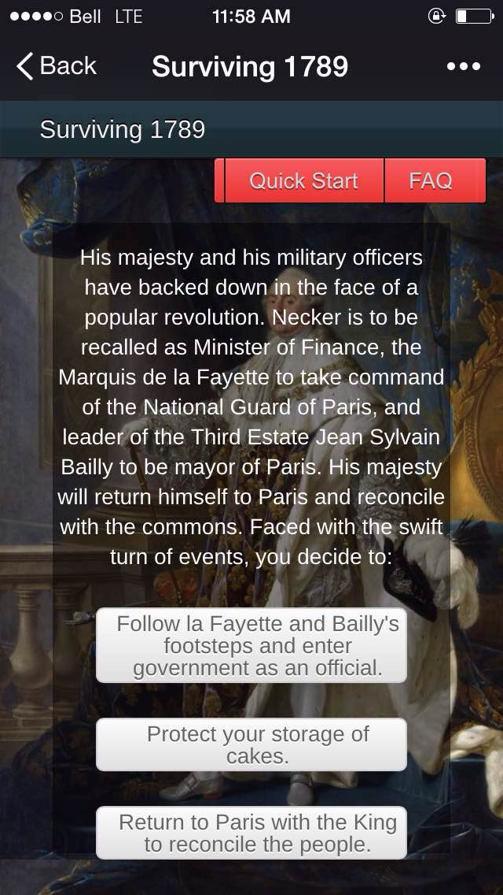

"SURVIVE 1789"
HIST 106 Steam Project Presentation
- Henry Lo -
What is this ?
- A game created for role-playing in the French Revolution.
- Act as a noble during the crisis
- Similar to pick-your-adventure books
Methodology
- Each round the player is presented with a scenerio.
- There are three choices for every scenerio.
- Depending on the decision, the player will gain or lose reputation.
- Each loss of reputation will risk *triggering* a death event.
- Depending on the scenerio, the background will change correspondingly.
- If the player survived all scenarios, the resulting reputation will dictate which ending will occur
Technical Details
- HTML 5, CSS 3, JavaScript, JSON as database
- Information from course textbook.
- Open sourced images from Wikipedia.
Screenshots - Homepage

Screenshots - Choices

Screenshots - Bastille

Screenshots - Louis xvi

*** Demo of the project ***